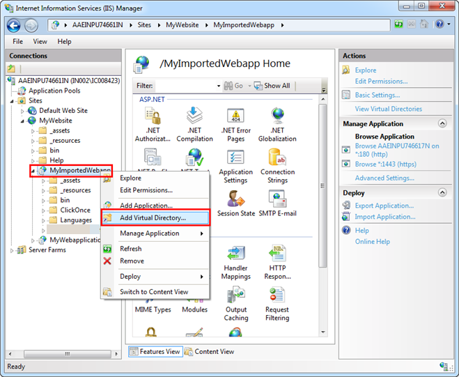
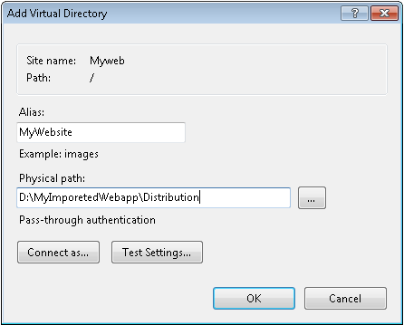
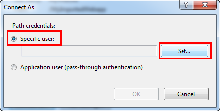
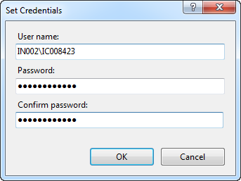
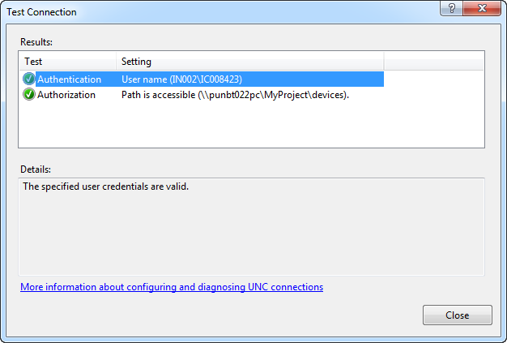
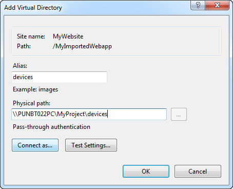
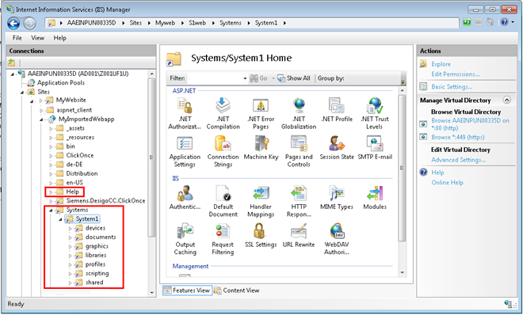
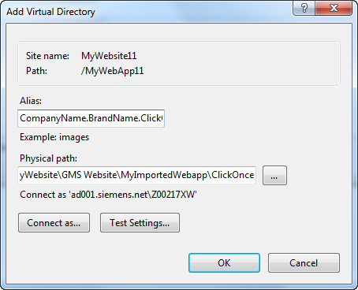
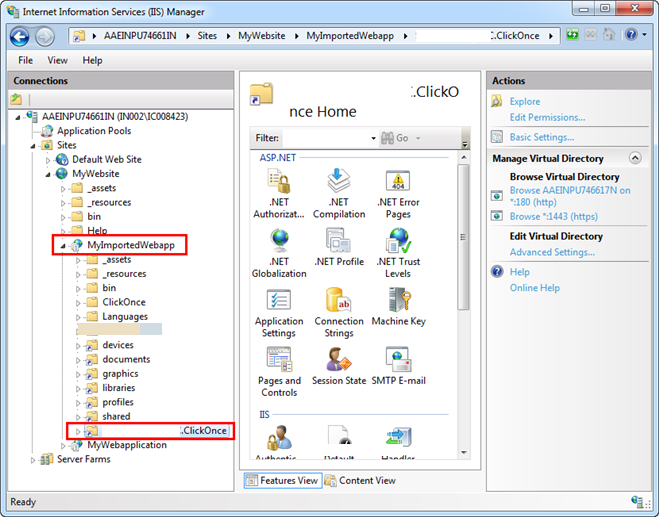

Create Virtual Directories for a Web Application in IIS
To save objects, such as graphics and journaling objects, you must create virtual directories for the web application that you created. You must create the following virtual directories under [Installation Drive]:\[Installation Folder]\GMSMainProject\_tmpGMSWebSite in IIS on the target machine under the …\Systems\[System Name] folder of the web application.
- devices
- documents
- graphics
- libraries
- profiles
- EM virtual directory, if the EM is installed, for example Scripting
- shared
Additionally you must also create the Help virtual directory under the web application in IIS. You must also copy the Help folder from the …\MainProject (from source) to the web application folder on the target machine.
The following procedure explains how to create all the virtual directories for the newly created web application:
- You are on the target machine and you have successfully imported the web application in IIS.
- Open the Internet Information Services (IIS) Manager.
- Select the web application that you have imported and right-click, and select Add Virtual Directory.

- In the Add Virtual Directory dialog box, enter information into the following fields:
a. Alias as Systems for creating the Systems virtual directory.
b. Physical Path as the local path of the Distribution folder of the web application on the target machine for example …\[Web application name]\Distribution. 
- Click Connect as.
- In the Connect As window, select Specific User and click Set.

- In the Set Credentials window, do the following:
a. Enter a user name (domain user credential with which you have shared the project, virtual directories and the user should be a member of the IIS_IUSRS group).
b. Enter a password and confirm it. 
- Click OK.
- Click OK in the Connect As dialog box.
- In the Add Virtual Directory dialog box, click Test Settings to open the Test Connection dialog box.
- Ensure that both results—Authentication and Authorization—are successful and the message
The specified user credentials are validdisplays in the Details section. 
- Click Close.
- Click OK.
- The devices virtual directory is added under the Web Application node in IIS.
- Repeat steps 3 to 12 to add the virtual directory [System Name], for example System1 under the Systems virtual directory.
- Repeat steps 3 through 12 to create the virtual directories: documents, graphics, libraries, profiles, and shared under the [System Name] virtual directory. Provide the Alias as the exact name of the virtual directory and Physical Path as the shared path of the source machine where the virtual directories are present, for example,
\\[Machine Name]\[Project Name]\devices.

- The documents, graphics, libraries, profiles, and shared virtual directories are created under the Systems\[System Name] node in IIS on the target machine.


NOTE:
To work with projects in distribution, that is, if the project to which the web application is linked is in distribution with other projects, then you must add the system names of the projects in distribution under the Systems virtual directory (on target machine). Furthermore, under each of the system names you need to add the same virtual directories present under the path [Installation Drive]:\[Installation Folder]\GMSMainProject\_tmpGMSWebSite. The path for these should be the shared path of these individual project directories on the source machine with the shared user.
Create a ClickOnce Virtual Directory
- You are on the target machine.
- You have successfully imported the web application in IIS, created the devices, documents, graphics, libraries, profiles and shared virtual directories.
- To create a ClickOnce virtual directory, you must first obtain the brand name of the product. To do this, proceed as follows:
a. Open the SMC, and from the Header bar, select Menu > About.
b. From the About dialog box that displays, verify the Product name. For example, Desigo CC .This is the brand name. - Open the Internet Information Services (IIS) Manager.
- Select the Web Application that you have imported and right-click, and select Add Virtual Directory.
- The Add Virtual Directory dialog box displays.
- In the dialog box, do the following:
a. Provide the Alias as [Company Name. + Brand Name + .ClickOnce]
NOTE: Remove any space characters in the brand name.
b. Provide the Physical Path by navigating to the ClickOnce folder of the imported web application on the third-party machine. Provide the physical path as the path of ClickOnce sub-directory under web application directory on the target machine. 
- Repeat steps 5 through 12 from Creating Virtual Directories for Web Application in IIS on Target Machine.
- The ClickOnce virtual directory is added under the web application node in IIS.
